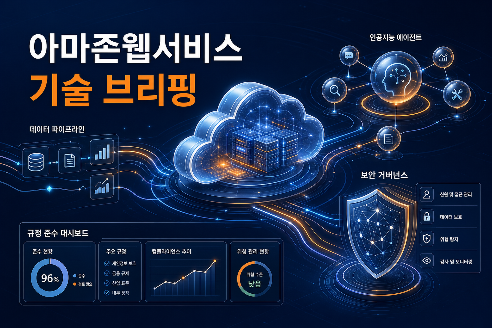
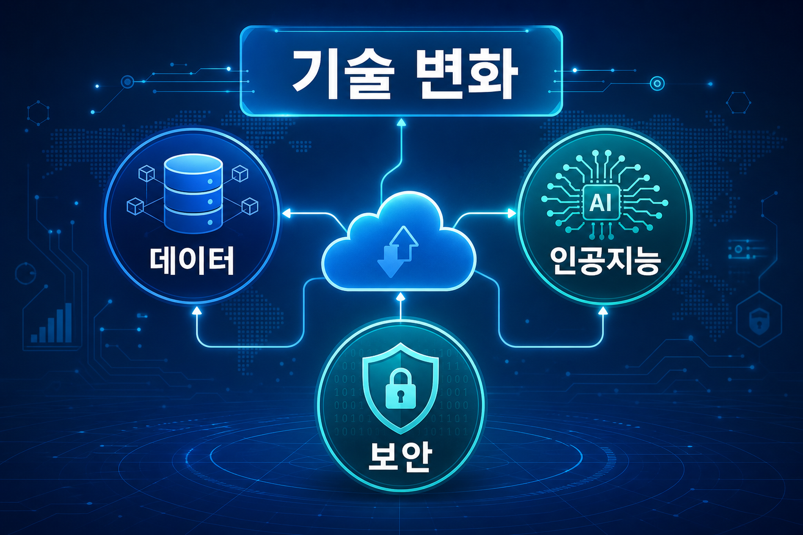
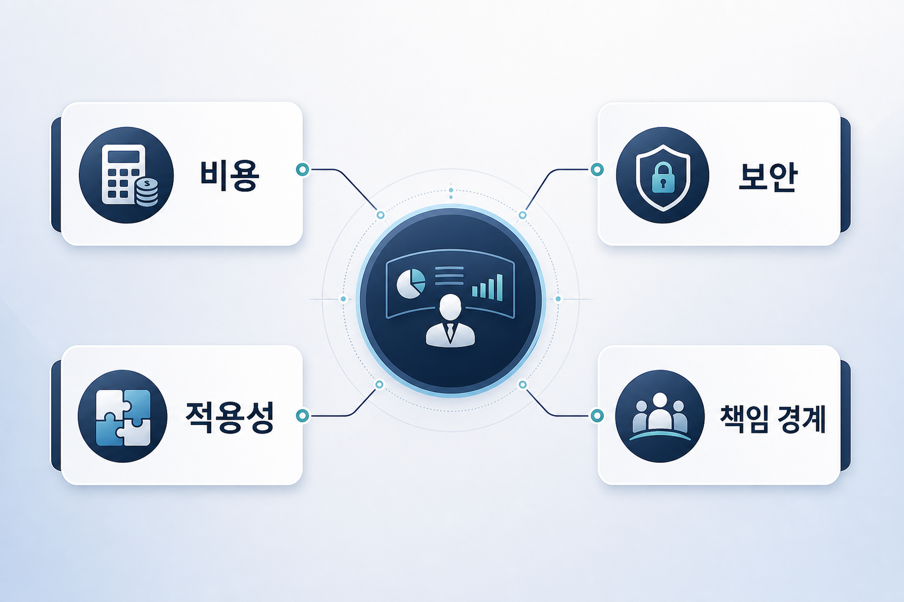

Amazon Bedrock의 새로운 콘솔 경험: Anthropic 및 OpenAI 호환 API 최적화
Amazon Bedrock 콘솔에서 Anthropic 및 OpenAI 호환 응용프로그램 인터페이스를 더 쉽게 다루도록 경험을 개선한 내용입니다. 실제 적용 전에는 지원 범위, 인증 방식, 기존 개발 도구와의 호환성을 확인해야 합니다.
원문 열기이번 실행에서 신규 수집한 게시물을 기준으로 분석했습니다. 본 문서는 수집된 원문과 로컬 지식형 Markdown에서 관찰되는 사실만 근거로 기업 의사결정 관점의 검토 포인트를 정리합니다.

Amazon Bedrock 콘솔에서 Anthropic 및 OpenAI 호환 응용프로그램 인터페이스를 더 쉽게 다루도록 경험을 개선한 내용입니다. 실제 적용 전에는 지원 범위, 인증 방식, 기존 개발 도구와의 호환성을 확인해야 합니다.
원문 열기Amazon EKS 환경에서 NVIDIA OSMO 기반 Physical AI 워크플로를 구성·운영하는 관점을 다룬 글입니다. 기업은 GPU 자원, 컨테이너 운영, 권한 관리, 비용 구조를 함께 검토해야 합니다.
원문 열기근거: 수집 문서의 서비스 목록에 Bedrock, SageMaker, Nova, Amazon Q 계열이 포함되었습니다.
검토 포인트: 기업은 모델·에이전트 적용 가능성과 함께 권한, 비용, 검증 기준을 원문 단위로 확인해야 합니다.
근거: 수집 문서에 스토리지, 분석, 데이터 처리 관련 서비스가 포함되었습니다.
검토 포인트: 데이터 품질, 접근 통제, 기존 데이터 플랫폼과의 통합 비용을 우선 검토해야 합니다.
근거: 수집 문서에 보안·권한·암호화 또는 보호 서비스가 포함되었습니다.
검토 포인트: 도입 전 책임 경계, 로그, 감사 가능성, 정책 적용 범위를 확인해야 합니다.

| 서비스·기술 | 관찰 횟수 | 근거 해석 |
|---|---|---|
| Amazon Bedrock | 1 | 관련 원문에서 직접 언급되었거나 추출 문서의 서비스 목록에 포함되었습니다. |
| Amazon EKS | 1 | 관련 원문에서 직접 언급되었거나 추출 문서의 서비스 목록에 포함되었습니다. |
| AWS IAM | 1 | 관련 원문에서 직접 언급되었거나 추출 문서의 서비스 목록에 포함되었습니다. |
| Amazon S3 | 1 | 관련 원문에서 직접 언급되었거나 추출 문서의 서비스 목록에 포함되었습니다. |
| Amazon RDS | 1 | 관련 원문에서 직접 언급되었거나 추출 문서의 서비스 목록에 포함되었습니다. |
| AWS KMS | 1 | 관련 원문에서 직접 언급되었거나 추출 문서의 서비스 목록에 포함되었습니다. |
| Amazon EC2 | 1 | 관련 원문에서 직접 언급되었거나 추출 문서의 서비스 목록에 포함되었습니다. |
표의 관찰 횟수는 이번 분석 입력 Markdown의 서비스 목록에서 계산한 값입니다.
원문에서 제시된 기능이나 사례가 기존 시스템·데이터 구조와 맞는지 먼저 확인해야 합니다.
관리형 서비스와 인공지능 기능은 사용량·토큰·데이터 이동에 따라 비용 구조가 달라질 수 있습니다.
권한, 데이터 접근, 로그, 암호화, 외부 연동 범위를 원문 조건과 내부 정책 기준으로 함께 검토해야 합니다.

관찰된 사실은 아마존웹서비스 공식 블로그의 신규 또는 최신 로컬 수집 문서에서 도출했습니다. 한국 기업은 기술 자체의 신기능보다 현재 데이터 거버넌스, 보안 심사, 비용 승인, 기존 클라우드 운영 기준과의 정합성을 우선 점검하는 것이 안전합니다.
수집 데이터만으로 국내 산업별 도입 효과나 규제 적합성을 단정하기는 어렵습니다. 해당 부분은 확인 필요입니다.
이번 수집 문서에서 직접 확인되는 서비스부터 원문의 전제 조건, 지원 리전, 과금 기준, 보안 설정, 기존 시스템 영향도를 대조하는 방식이 적절합니다. 이는 단계별 로드맵이 아니라 이번 출처 데이터에 대한 검증 순서입니다.
신규 수집 문서를 사용했습니다.
서비스 도입 시 구성, 권한, 데이터 처리, 모니터링 책임이 어느 조직에 있는지 명확히 해야 합니다.
성능·비용·보안 주장은 원문 조건과 실제 계정·워크로드 조건이 일치할 때만 유효합니다.